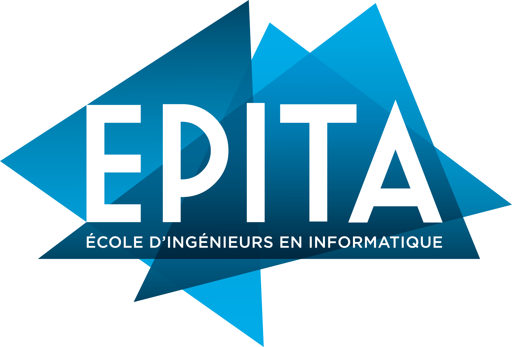
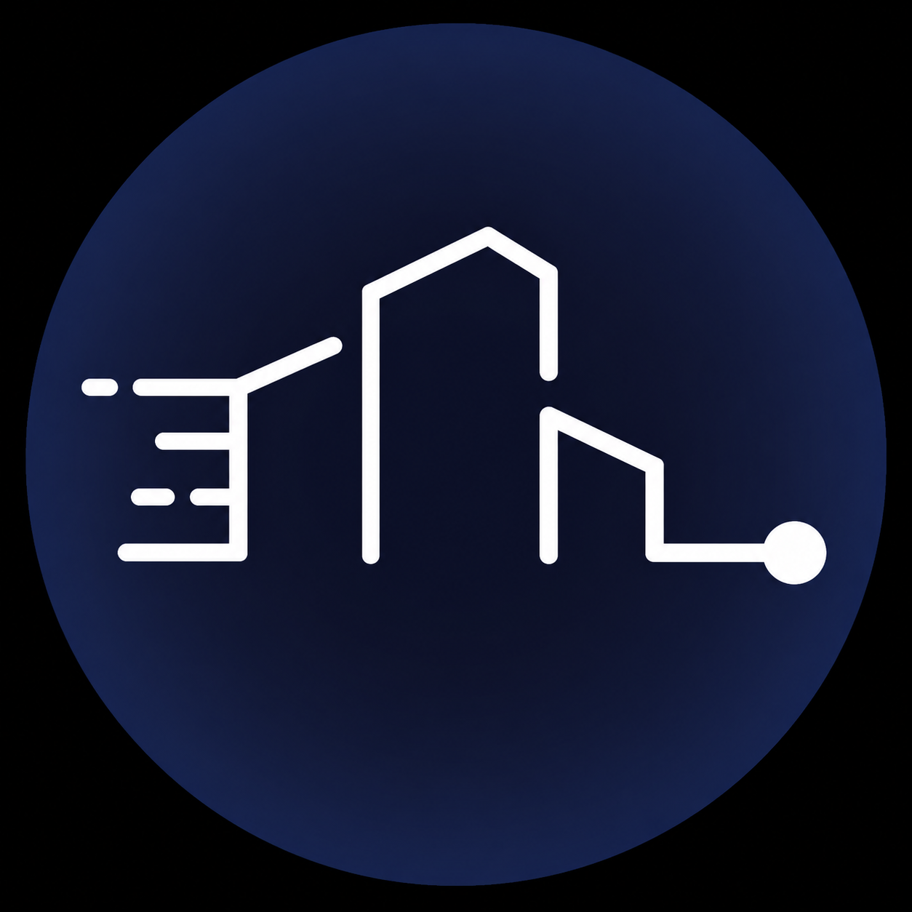
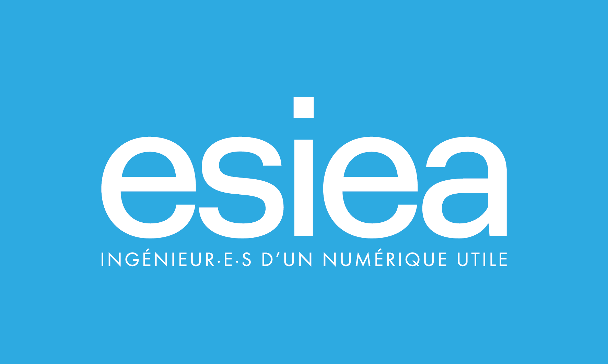

De nature curieux, discret et appliqué, j’éprouve un réel plaisir à résoudre des problèmes techniques et à développer des outils utiles. L’informatique représente pour moi un domaine d’exploration constant, où chaque difficulté est l’occasion d’apprendre et de progresser.
Depuis maintenant deux ans, j’évolue en alternance au service cybersécurité d’Emeria, entreprise d’administration de biens et de transaction immobilière qui m’avait déjà accueilli lors d’un précédent stage en deuxième année de bachelor.
Ce lien professionnel durable m’a permis de m’impliquer sur des projets concrets et exigeants, en particulier dans le domaine de la cybersécurité. J’ai pu y mettre en œuvre mes compétences en développement, en automatisation et en traitement des données, notamment à travers différents projets internes.
Parallèlement, j’ai aussi exploré le développement embarqué à titre personnel.
Ce que j’apprécie particulièrement, c’est d’être autonome dans l’apprentissage et de m’investir dans des missions où l’on me fait confiance. J’aime comprendre le fonctionnement profond des systèmes afin de concevoir des solutions robustes, cohérentes et utiles.
Mon objectif est de devenir DevSecOps, un rôle qui permet de réunir développement, sécurité et infrastructure avec une approche moderne basée sur l’automatisation.
J’ai déjà commencé à me former dans cette direction, et les compétences acquises jusqu’ici me rapprochent progressivement de cet objectif.
Je donne une grande importance à des valeurs humaines solides dans mon travail : le respect, l’entraide et la bienveillance.
Travailler en équipe, partager mes connaissances ou aider un collègue en difficulté sont des choses naturelles pour moi.
Je suis convaincu que les meilleurs projets informatiques naissent dans un environnement collaboratif sain.
Je suis autonome, rigoureux, curieux et à l’écoute des autres.
Ces qualités m’aident aussi bien dans la gestion de mes projets que dans les échanges avec mes collègues.
J’aime comprendre avant d’agir et j’essaie toujours de produire un travail soigné, dans le respect des attentes de l’équipe et des utilisateurs finaux.
En dehors du travail, je suis passionné par les jeux vidéo, les jeux de cartes, les jeux de plateau et l’univers des animés japonais.
Ces loisirs me permettent de me détendre, de réfléchir autrement et parfois même de retrouver des logiques proches de l’informatique, comme dans les jeux de stratégie ou les systèmes complexes.
Le développement reste également un loisir personnel : j’aime coder pour moi, tester de nouvelles technologies et construire des projets personnels afin de continuer à progresser.
Mon objectif est clair : devenir DevSecOps, avec une spécialisation potentielle dans d’autres domaines de la cybersécurité.
J’aspire à travailler sur des systèmes critiques, où la sécurité applicative, la fiabilité et l’automatisation sont au cœur des enjeux.
Mon alternance, ma formation à l’ESIEA ainsi que mes trois années de bachelor en cybersécurité à l’EPITA m’ont permis de construire des bases solides.
Je souhaite poursuivre cette montée en compétences afin d’occuper à terme un rôle d’expert en développement sécurisé et en gestion d’infrastructure.
Dans le cadre de mon alternance au sein de l’équipe cybersécurité d’Emeria, je participe activement depuis plus d’un an aux activités liées à la gestion des identités et des accès (IAM – Identity and Access Management).
L’entreprise utilise la plateforme Okta afin de centraliser la gestion des comptes utilisateurs, des groupes et des droits d’accès aux différentes applications du système d’information.
La gestion des identités est un élément essentiel de la sécurité d’un système d’information. Elle permet de garantir que chaque utilisateur dispose uniquement des accès nécessaires à ses fonctions et que les modifications apportées aux droits sont correctement tracées et contrôlées.
Dans ce contexte, l’équipe IAM organise régulièrement des réunions de suivi afin d’analyser les demandes d’évolution concernant les workflows et les processus de gestion des accès.
Depuis mon arrivée dans l’équipe, je participe activement à ces réunions et je prends en charge une partie des demandes de modification ou d’amélioration des workflows Okta.
Au fil du temps, cette activité est devenue l’une de mes principales missions au sein d’Emeria et représente aujourd’hui une part importante de mon travail quotidien.
Scroll horizontale activé pour la timeline ci-dessous.
Cliquez sur les noeuds de la timeline pour plus de détails..

Établissement : EPITA - Paris
EPITA est une école d’ingénieurs reconnue spécialisée dans l’informatique. Elle propose une formation exigeante orientée technique, développement, systèmes, cybersécurité et innovation.
Parcours :
• 2021 : Prépa intégrée
• 2022 : Bachelor 1
• 2023 : Bachelor 2
• 2024 : Bachelor 3

Entreprise : Emeria France
Statut : Stage
Responsabilité : Développement d’un outil interne.
Détail des missions :
• Développement d’un système d’analyse de log sources.
• Traitement de données techniques.
• Automatisation de contrôles.
Réalisations liées :
Compétences liées :
Entreprise : Reelia
Statut : Stage
Responsabilité : Développement web complet.
Détail des missions :
• Création d’un site web complet.
• Mise en place de la sécurité applicative.
• Développement front-end / back-end.
Compétences liées :
Entreprise : Emeria France (Foncia)
Statut : Alternance
Responsabilité : Participation active au service cybersécurité.
Détail des missions :
• Gestion des identités et accès (IAM)
• Administration Okta
• Développement de workflows
• Automatisation Python
• Contrôles sécurité internes
Réalisations liées :
• Workflows Okta
• Documentation automatisée
Compétences liées :
• IAM
• Scripting
• Travail en équipe

Établissement : ESIEA - Paris
L’ESIEA est une grande école d’ingénieurs orientée numérique, cybersécurité, intelligence artificielle et innovation technologique.
Parcours :
• 2025 : Master 1
• 2026 : Master 2